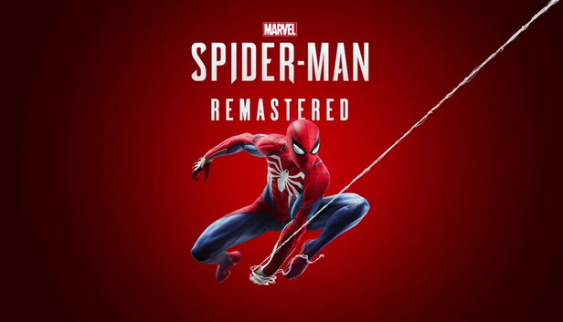

Spider-Man Remastered para PC
La remasterización del clásico juego de Marvel llegará pronto a PC y desde PlayStation revelaron todos los detalles de esta esperada entrega.
Marvel’s Spider-Man llegará finalmente a PC y desde Insomniac Games revelaron todos los detalles gráficos del juego en computadoras y los requisitos mínimos e ideales para disfrutarlo al máximo. Además, un tráiler con todas las novedades y lo que se puede esperar del juego en PC.
Spider-Man Remastered: características del juego para PC
Insomniac Games lleva un año trabajando junto a PlayStation Studios y el estudio desarrollador especializado en PC, Nixxes Software y ahora puede revelar todas las características gráficas que traerá Spider-Man Remastered en su versión para PC.
- Ray tracing con mayor calidad y un enorme detalle en la ciudad de Nueva York para quienes tengan el hardware compatible
- Compatibilidad con Nvidia DLSS, que permite aumentar el rendimiento gráfico con procesadores de IA y permite que crezca la calidad de imágenes a través de mayor velocidad de cuadros.
- Compatibilidad con Nvidia DLAA (Deep Learning Anti-Aliasing), para aumentar la calidad de imagen para jugadores de GeForce RTX que tienen el espacio de GPU.
- Opciones de resoluciones y una amplia variedad de relaciones de aspecto, incluidas ultraancha 21:9, panorámica 32:9 y configuraciones de monitores múltiples NVIDIA Surround, incluso con la posibilidad de jugar con tres monitores.
- Opciones de configuraciones más personalizables con niveles de calidad y opciones algorítmicas adicionales. Esto incluye SSAO, filtro de texturas, calidad de LoD, sombras y más. Admitimos modos de ventana, pantalla completa y de procesamiento de pantalla completa exclusivo.
- Compatibilidad absoluta con el DualSense de PS5 mediante conexión por cable. También teclado y mouse. Mayores opciones de accesibilidad. Compatibilidad de logros y partidas guardadas en la nube, tanto en la Epic Games Store como en Steam.